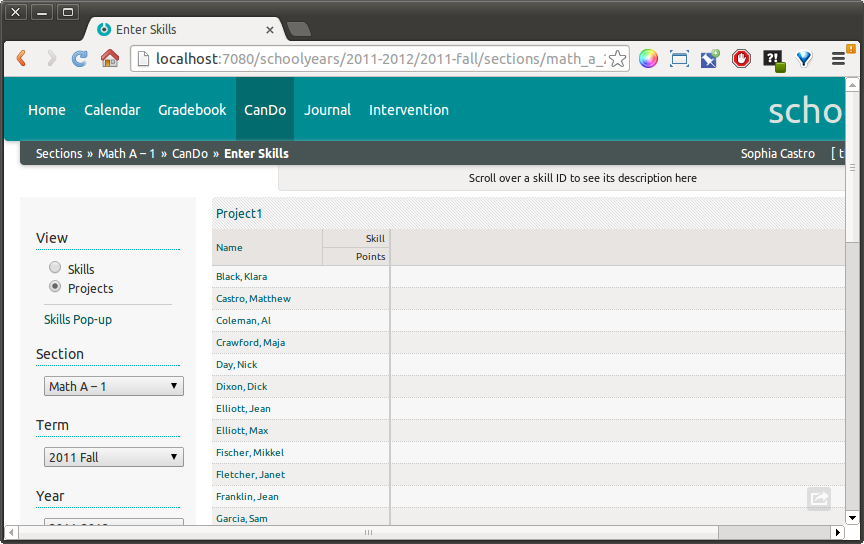
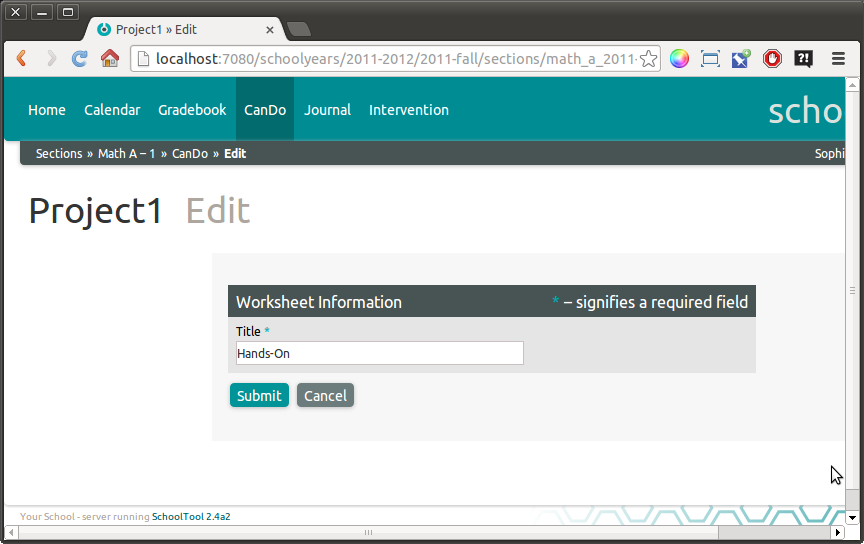
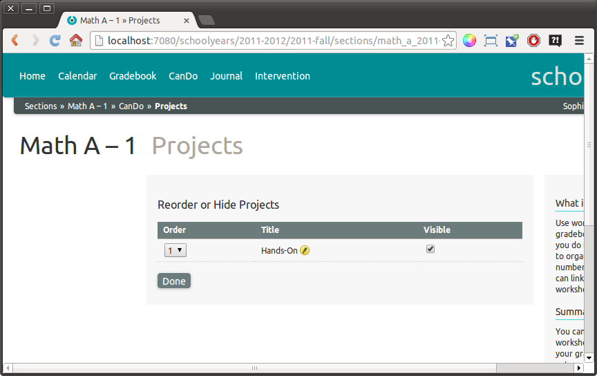
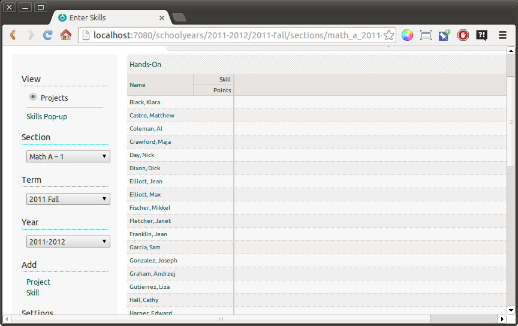
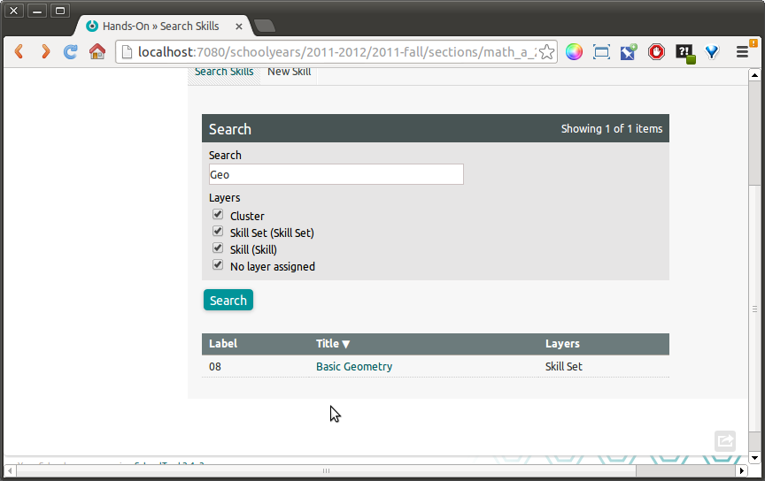
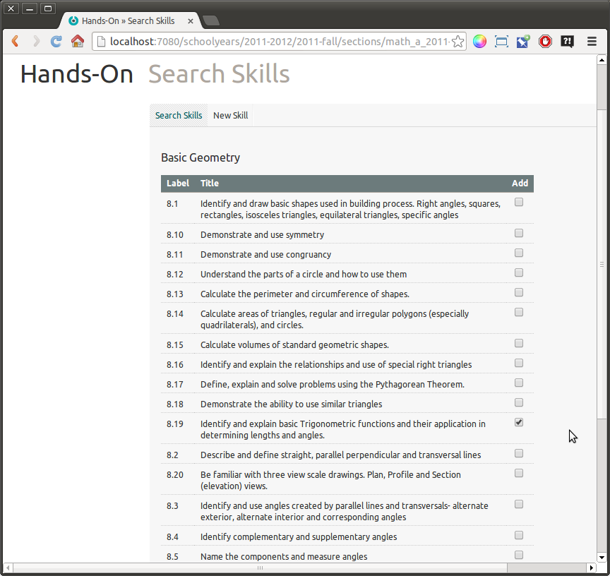
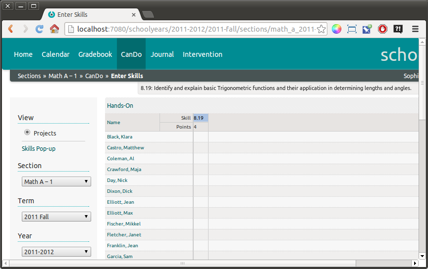

Using Project Worksheets¶
The “Skills” view of a teacher’s CanDo gradebook is organized by Skill Sets assigned to the course.
The “Projects” view allows teachers to add individual skills to a section, and organize them freely.
Note
Scores entered in the Projects worksheets are “inherited” by the Skill Set worksheets, but not vice versa. For example, if Skill A has a score of “2” in the Skill Set worksheet, and a new Project is created containing Skill A, no score will appear in the Project worksheet. This reflects the fact that the Project has not been evaluated, the skill has not been evaluated in the context of the project. The Score History in the Project worksheet only shows the scores entered in the project.
Once Skill A is evaluated in the project, the core will also appear in the Skill Sets view and Score History. If it is subsequently updated in the Skill Sets view, the score in the Projects worksheet will not be updated.
Adding Skills to Projects¶
Click the View: Projects radio button in the left sidebar:

This includes an empty default project called “Project1”. We will rename this to “Hands-On.” Click on Settings: Projects in the left sidebar:
And on the yellow edit pencil next to Project1:

Click Submit:

And Done to return to the gradebook:

To add a Skill to the current project, click Add: Skill in the left sidebar. Use the form to search for the skill you would like to add. You can use the checkboxes to select specific layers in the skills hierarchy.
Warning
This search is currently buggy. You can only reliably search for Skill Sets.
Clicking on the title of the Skill, Skill Set or other node will take you to a form displaying a Skill Set or list of Skill Sets.

In this case, you see the Basic Geometry Skill Set. We’ll select “Identify and explain basic Trigonometric functions and their application in determining lengths and angles.” You could also add other Skills from this set at this time if you wished.
Click Submit:

The skill has been added to the project.
You can now add additional skills from different Skill Sets, different Documents, or even newly created ones.
The Skills in the Project view are scored just like the Skill Set view.